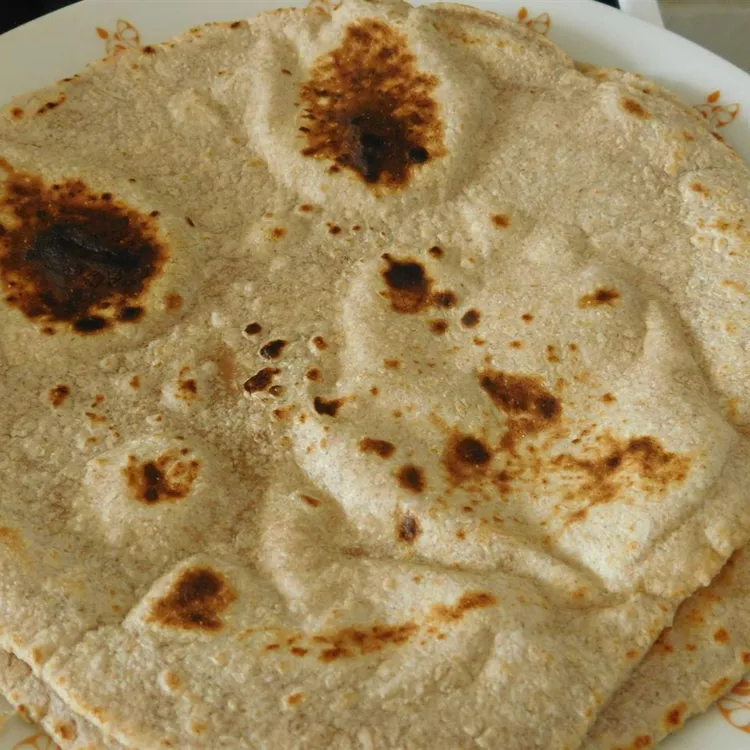

Chapati

Description:
This chapati recipe is simple and delicious. Serve this Indian flatbread with curries or use it as a sandwich wrap. Enjoy!
Ingredients:
- Flour
- Salt
- Hot water, as needed
Directions:
- Mix flours and salt in a large bowl. Use a wooden spoon to stir in water and olive oil. Mix until a soft, elastic dough forms and add more water, if needed. Knead dough on a lightly floured surface until smooth.
- Divide dough into 10 equal portions, or less if you want larger chapatis. Roll each piece into a ball and let rest for a few minutes.
- Make Roti
- Done